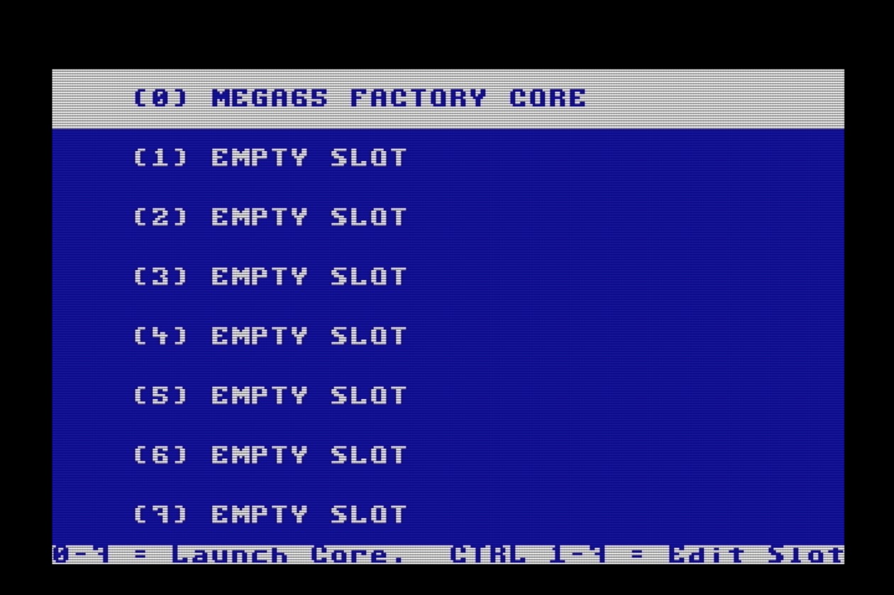
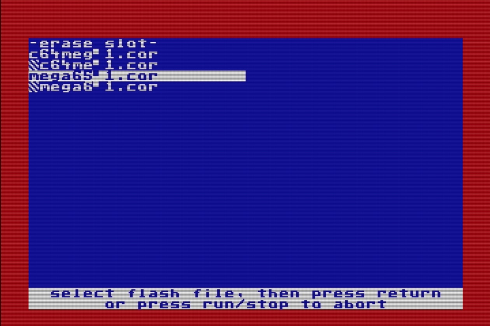
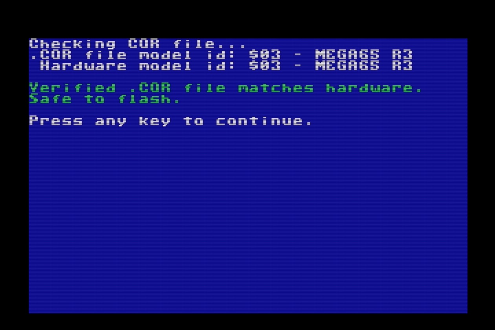
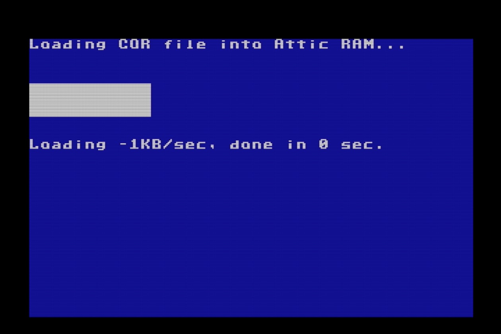
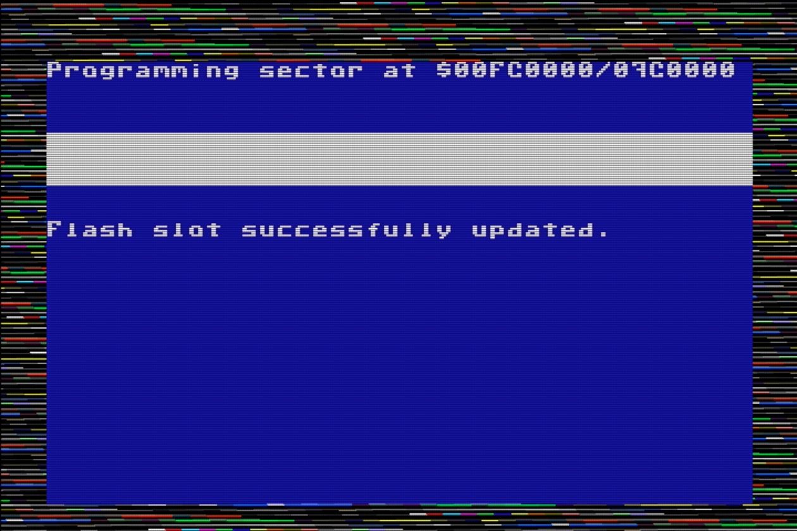
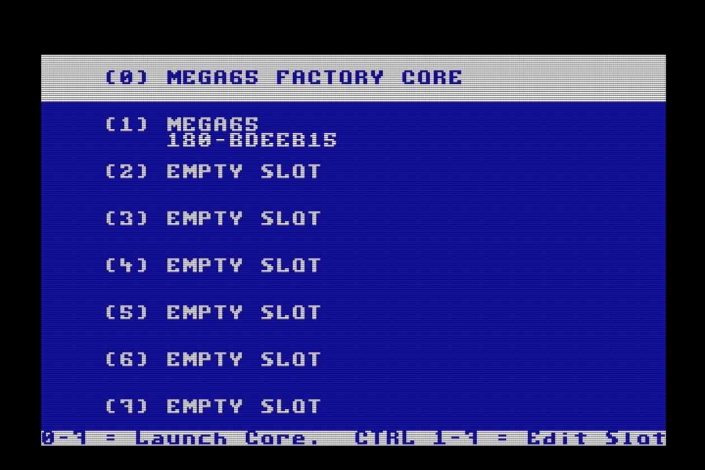
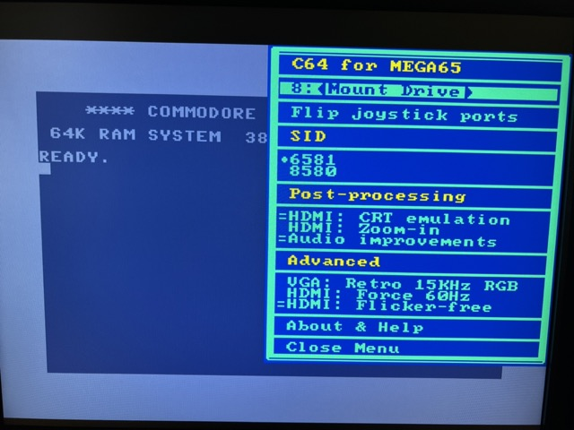

Updating the core firmware¶
A new version of the core has been released since the batch #1 MEGA65 was produced, so you will want to update it. The newest ROM expects the new core.
On the Filehost website in the Firmware category, locate and download “mega65r3-dev.cor”. Copy this file to the microSD card.
Eject the microSD card from your PC and reinsert it into the MEGA65 external slot. Turn off the MEGA65 if necessary, then hold the No Scroll key (in the top row) and turn it on. This is the core selection and installation menu.

Core 0 is always the factory-installed core and cannot be overwritten. This can help you restore your MEGA65 to a working state if something goes wrong with updating a core. If this is your first time seeing the core selection menu, slots 1 through 7 should be empty.
When you turn on your MEGA65 normally, it checks to see if slot 1 contains a core, and uses it if present. Otherwise it falls back to core 0. You will put the updated core in slot 1 for regular use.
Hold the Ctrl key and press 1. Use the cursor keys to find the mega65-1.cor filename (a shortened version of the full filename). If there is a second one with a stripey thing next to it, select the one without the stripey thing. Press Return, then press any key when prompted to install the core.

The flashing process takes a minute or so. When it is complete, you’ll see the message, “Flash slot successfully updated,” and the border will blink. Press any key to return to the core selection menu. Finally, press 1 (without Ctrl) to start the system with the new core.
   
Tip
For more on installing cores, see the User’s Guide, chapter 6, starting page 47.
Symptoms that you’re using the wrong MEGA65 core¶
If you’ve been following along with this Guide, you should now have a MEGA65 that uses the latest core and ROM when you turn it on. You can confirm the core and ROM versions as described in Determining the versions of things.
The community has noticed a few common symptoms caused by older versions of the ROM, the core, or a version mismatch:
The Freeze menu appears too low on the screen, obscuring the bottom.
You have an older ROM, or an older version of
FREEZER.M65.
The Freeze menu does not display the name of the selected D81 file next to the drive, and the disk does not mount properly.
You are using the newer ROM with the older core.
Disk directory misbehavior, such as an extra file, or missing files.
You are using the newer ROM with the older core.
The C64 core¶
We mentioned that the MEGA65 can run other cores besides the one that causes your Mega to act like a Commodore 65. Today, there is one other core available that you can try: a Commodore 64.
The C64 core is not the same as the C65’s Commodore 64 mode, the one you start by typing GO 64 (see Commodore 64 mode). The C64 core completely transforms your Mega into a Commodore 64, with no C65 or MEGA65 features.
The initial version of the C64 core is available for you to try, and it’s a good demonstration of how cores work. It strives to be more compatible with C64 software than the C65’s Commodore 64 mode. The initial version supports PAL displays, a simulated C1541 drive that supports D64 image files, and joysticks.
If you’d like to try it, go to Filehost, then locate and download “C64 for MEGA65”. Install it like you did the MEGA65 core update, using slot 2.
The C64 core can read D64 image files off of the SD card. While the C64 core is running, press the Help key to open the menu. Press Return on the first line to browse the SD card, then select a disk image to mount to device 8. Press Help again to close the menu. The disk image you selected is now mounted, and you can execute C64 disk commands as usual (such as LOAD "*",8,1).

Tip
To avoid cluttering your SD card with D64 images, you can create a folder named c64 and put the D64 files in there. The C64 core will notice the folder and limit its browser to just these files.
See the Commodore 64 for MEGA65 manual for more information.
To return to the MEGA65 core in slot 1, turn off the machine, then turn it on again.